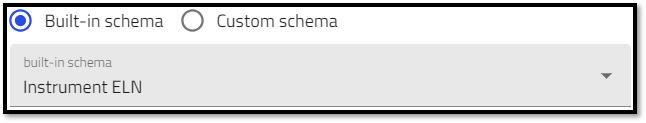
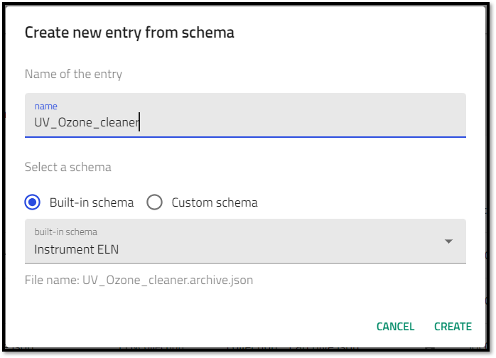
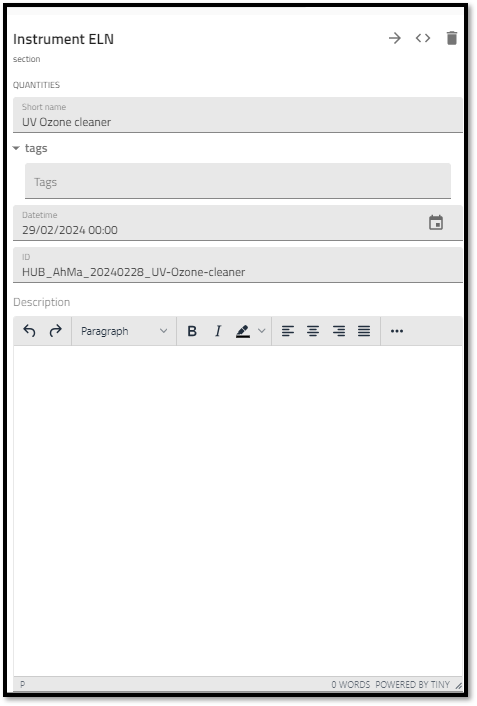

Instruments
images/built-in_schema# Creating an Electronic Lab Notebook using NOMAD built-in ELN schema
Creating instrument entities using the Instrument ELN schema¶

In this section, you will learn how to create NOMAD entries for entities that are instruments used to prepare and characterize your samples. You will use NOMAD's built-in schema, called Instrument ELN, and explore the various fields you can populate and the information you can add to NOMAD.
Based on the example described earlier, we will need to create entries for the following substnaces: 1. UV Ozone cleaner 2. Ultrasonic bath 3. Scale 4. Optical spectrometer 5. Conductivity board 6. Spin coater
For general steps on how to create records in NOMAD using the built-in ELN schema, see theGetting started page. When you reach step 8, select Instrument ELN from the drop-down menu, enter a name for your entry, and click Create.
Lets start by creating an entry for the UV Ozone Purifier.

After clicking the Create button, the following tasks are automatically performed within NOMAD: 1. NOMAD will create a file for the entry using the .archive.json format. 2. The entry file is stored in the main upload directory. 3. NOMAD will open the entry, switch to the data tab, and open the data sub-sections page.
The data sub-sections page allows user input to fill in the information about the instrument.

In the Instrument ELN built-in schema, several fields are available to accept entry of different quantities: * Short Name: This is the name of the input file created. * Datetime: Allows the entry of a date/time stamp.
-
ID: A human readable ID that is unique to the instrument within the laboratory.
-
Substance Detailed Description: A free text field that can be used to enter any additional information about the entry.
Remember that this is your ELN and you are using a built-in schema that was created to be as general as possible to accommodate as many users as possible. You are free to use the various fields as you see fit.
| [Previous] | Creating instrument entities using the Instrument ELN schema | [Next] |
|---|---|---|